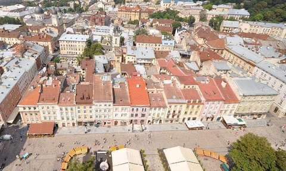
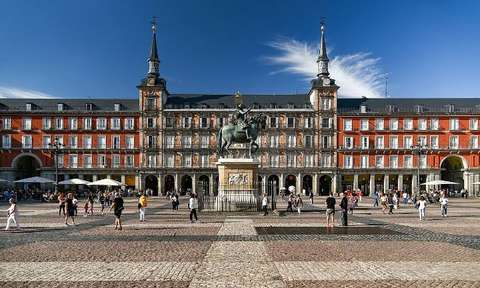

Львів, Україна

Місто кави, бруківки та архітектури, де історичний центр внесено до Списку світової спадщини ЮНЕСКО.
Моя оцінка: 10 / 10. Читати про Львів
Тут я розповідаю про три міста, які для мене найцікавіші: рідний Львів, сонячний Мадрид і величезний Лондон. Для кожного міста є окрема сторінка з характеристикою, цікавими фактами, визначними місцями та моєю особистою оцінкою.
Маєте місто, яке варто додати до наступного рейтингу? Заповніть форму пропозиції.

Місто кави, бруківки та архітектури, де історичний центр внесено до Списку світової спадщини ЮНЕСКО.
Моя оцінка: 10 / 10. Читати про Львів

Столиця Іспанії зі світового рівня музеями, широкими бульварами і парком Ретіро.
Моя оцінка: 9 / 10. Читати про Мадрид

Мегаполіс на Темзі, де поруч стоять середньовічний Тауер і сучасні хмарочоси.
Моя оцінка: 8 / 10. Читати про Лондон
| Місто | Країна | Чим вражає | Оцінка |
|---|---|---|---|
| Львів | Україна | Старе місто, кав'ярні, атмосфера | 10 / 10 |
| Мадрид | Іспанія | Музеї, палаци, парки | 9 / 10 |
| Лондон | Велика Британія | Історія, музеї, масштаб | 8 / 10 |